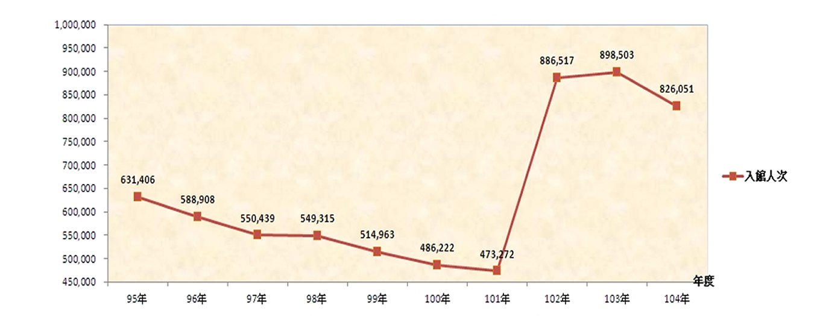

首页
数据申请
相关链接
联系我们
意见信箱
旧版主页
基础数据库
农村统计
涉农政策
法律法规
农村研究
调查数据库
跟踪调查
质性调查
历史调查
案例数据库
地方试验
调查个案
基地数据库
基地工作
人才培养
学术研究
社会反响
文献数据库
地方志
家谱档案
村庄档案
农民记忆
多媒体数据库
音频库
纪录片
图片库
特色推荐-家谱
又称族谱、宗谱等。是一种以表谱形式记载一个家族的世系繁衍及重要人物事迹的书.家谱属珍贵的人文资料。
特色推荐-口述史
又称族谱、宗谱等。是一种以表谱形式记载一个家族的世系繁衍及重要人物事迹的书.家谱属珍贵的人文资料。

访客统计
又称族谱、宗谱等。是一种以表谱形式记载一个家族的世系繁衍及重要人物事迹的书.家谱属珍贵的人文资料。
特色推荐-方志
又称族谱、宗谱等。是一种以表谱形式记载一个家族的世系繁衍及重要人物事迹的书.家谱属珍贵的人文资料。
Previous
Next